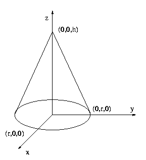

A cone is located in 3D such that its base of radius r is in the z = 0 plane with the center at (0,0,0). The tip of the cone is located at (0, 0, h). Two points are given on the cone surface in conic coordinates. The conic coordinates of a point p lying on the surface of the cone are two numbers: the first, d, is the distance from the tip of the cone to p and the second, A < 360, is the angle in degrees between the plane y = 0 and the plane through points (0,0,0), (0,0,h) and p, measured counterclockwise from the direction of the x axis.

Given are two points p1 = (d1, A1) and p2 = (d2, A2) in the conic coordinates. What is the (shortest) distance between p1 and p2 measured on the surface of the cone?
The input is a sequence of lines. Each line contains 6 floating point numbers giving values of: r, h, d1, A1, d2, and A2
For each line of input, output the (shortest) distance between points p1 and p2 on the surface of the cone with the fraction rounded to 2 decimal places.
3.0 4.0 2.0 0.0 4.0 0.0
3.0 4.0 2.0 90.0 4.0 0.0
6.0 8.0 2.14 75.2 9.58 114.3
3.0 4.0 5.0 0.0 5.0 90.0
2.00
3.26
7.66
4.54